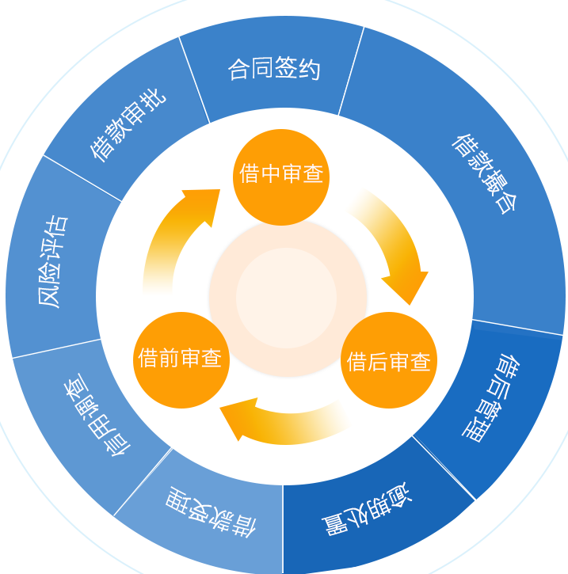
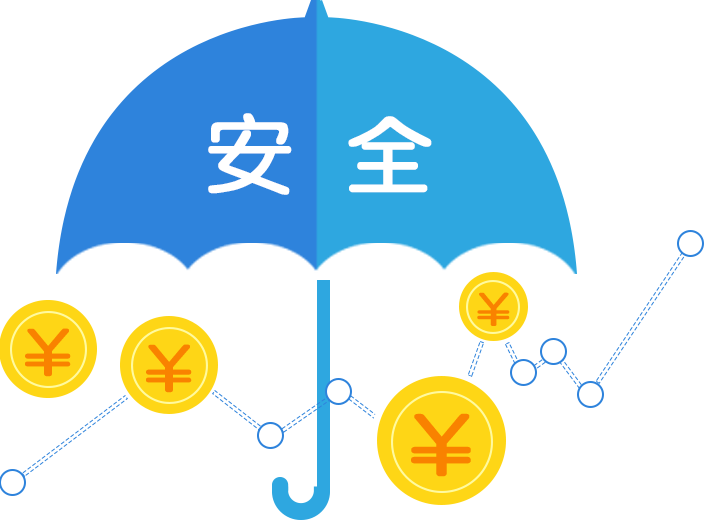
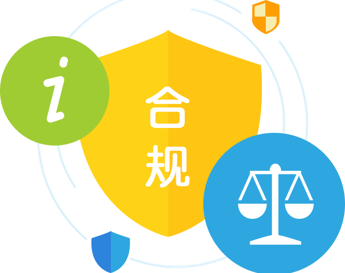

公司建立了一套完整、严谨的风控体系，将借前调查、借中审查、借后检查三个环节进行流程梳理与优化，对各风险节点设置具体管控需求。
公司借助大数据风控体系，整合行业资源与全网信息，挖掘借款申请人大量基础数据点并分析其信用行为，综合利用第三方数据信息，提高反欺诈能力，智能化信用风险评估。
公司风控团队专业支持，团队成员具备良好专业背景，从风控体系建立到执行，从借前审查到借后管理，都有专业理论基础和丰富实战经验。
借款项目由公司第三方合作机构推荐，坚持小额借款额度，借款项目分布于全国多个省份，涵盖不同行业的小微企业主和个人。
公司第三方合作机构在多个省份设立线下门店，设有专门业务人员服务当地，所有借款项目均实地考察、调查验证，保证债权真实。
一旦借款人发生逾期还款，公司第三方合作机构将依据相关协议，及时通过电话、短信、大数据云端催告、诉讼等方式，线下线上全方位立体化催缴。
实名认证：所有账户交易前均需实名认证，并绑定银行卡。
同卡进出：充值时所使用的银行卡，提现时原路返回。
Me金融与实力雄厚的江西银行签订资金存管协议，出借资金全权存管，保证平台绝对中介服务性质，最大程度避免资金池。
民信设立质保服务计划，按照每笔借款金额计提一定比例计入质保服务专款，专款专用。
当借款人出现逾期纠纷时，民信将启用质保服务专款对相应出借人进行偿付。
聘用第三方专业法律顾问，Me金融所有业务活动以及相关合同和协议均经法务确认，确保符合相关法律法规，合法守信经营，让Me金融的用户权益受国家法律保护。
根据《合同法》第23章关于“居间合同”的规定，Me金融作为合法设立的中介服务机构，为民间借贷提供撮合，使借贷双方形成借贷关系并收取相关报酬的居间服务有着明确的法律基础。
借助SSL技术开发的数据安全体系，完美构建银行等机构级安全的信息系统安全保障，为用户资金及个人信息提供360度无死角的信息安全环境。
组建专业技术团队，全程自主开发，从技术层面、内部建设和隐私管理等方面，为广大用户提供7*24小时在线技术服务解决方案。